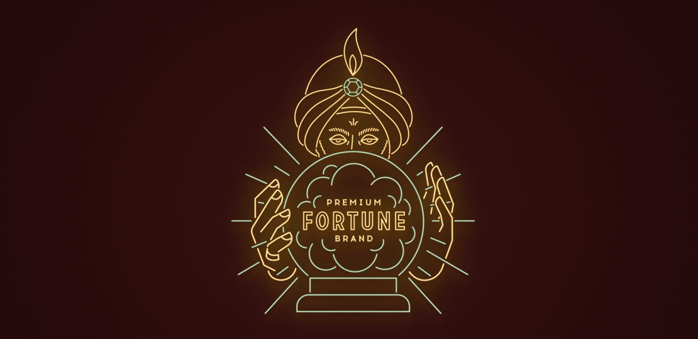
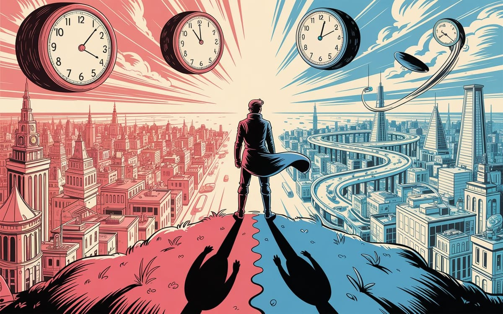

:: Now begins a story...
May I present to you, a finely curated section of a fine collection of the wonderful web we weave with a weekly roundup of bits and pieces from the far corners of the super information highway that I like to call — Token Wisdom ✨


"The best way to predict the future is to invent it."

Editor's Notes 📆
Week 34 of 52 // August 17th 🧿 23rd, 2025
Welcome to the 122nd edition! This week we delve into AI's transformative impact on industries, witness the power of swarm intelligence, and explore groundbreaking technological innovations. From McKinsey's reckoning with AI to the paradoxes of human consciousness, we're examining how our quest for knowledge is reshaping our world and our future.
The convergence of AI advancements, collective intelligence, and philosophical inquiries paints a complex picture of humanity's progress and the questions we face as we push the boundaries of science and technology.

🔮 Pearls of Wisdom, The Latest Edition...
Get smart, fast. If you're pressed for time and want to keep up to date!
Enjoy The Newest Latest, A Closer Look & Time Well Spent!

🎉 Newest / Latest
100% Authentic Humanly Chosen

AI Disruption, Swarm Intelligence, and Technological Breakthroughs
This week's collection explores the transformative power of AI across industries, the fascinating world of swarm intelligence, and groundbreaking technological innovations. From corporate strategies to philosophical inquiries about consciousness, we're witnessing rapid advancements that challenge our understanding of intelligence, both artificial and natural.
- McKinsey Terrified as It Realizes AI Can Do Its Job Perfectly
The illustrious consulting firm McKinsey is reckoning with AI like everyone else as it threatens to automate its profession. Read more at Futurism - Swedish startup unveils Starlink alternative — that Musk can't switch off
A new pocket-sized Starlink alternative promises secure military communications — safe from interference by billionaire CEOs. Learn more at The Next Web - Growing Ultrathin Semiconductors Directly on Electronics Could Eliminate a Fragile Manufacturing Step
A team of materials scientists at Rice University has developed a new way to grow ultrathin semiconductors directly onto electronic components. Explore at TechXplore - TSMC Could Revolutionise Rural Japan
Its "Silicon Island" is getting a second chance at success. Read more at The Economist - A Personal Health Large Language Model for Sleep and Fitness Coaching
A large language model designed for health monitoring provides personalized sleep and fitness predictions, insights and advice. Discover at Nature - Japan Storms Back Into the Chip Wars
The country used to be a semiconductor powerhouse. Can it be one again? Learn more at The Economist - Why You Need Systems Thinking Now
It's the best way to anticipate the many secondary effects of change in an interconnected world. Read more at Harvard Business Review - Fishbanks: A Renewable Resource Management Simulation
A multiplayer web-based simulation for sustainable resource management. Explore at MIT Sloan - Why 'Move Fast and Break Things' No Longer Works for Innovation
Speed alone, detached from purpose and consequence, is unsustainable innovation. Learn more at Trellis - We Are Back in a Startup Bubble, 4 Years After the 2021 Bubble Peaked
An analysis of startup valuations and funding trends. Read more on LinkedIn
*CAUTION: Side effects might include your consulting firm spontaneously evolving into an AI, your smartphone chip suddenly demanding a vacation in rural Japan, or finding yourself inadvertently funding both systems thinking research and startup bubbles through surreal AI-generated content.
This uncanny prediction is endorsed by the Association for AI-Powered Consulting in Resource-Stressed Environments, approved by a consortium of health-conscious language models currently exploring the origins of the semiconductor universe through swarm intelligence simulations, and verified by a mysterious startup currently on display at the Silicon Island festival.
👁️ A Closer Look
Unearthing gems in the digital landscape.

Because in the ever-evolving tech world, there's always more to learn and laugh about.
The Time Traveler's Blues: Living Eight Years Ahead While the World Catches Up
Ever laughed at a joke eight years before the punchline? Welcome to my digital Cassandra complex. For two decades, I've been predicting tech's future, living in tomorrow while everyone else catches up. It's lonely being right—until it's terrifying. Join me on a journey through time, technology, and the hidden truths of innovation. Discover how pattern recognition creates its own form of isolation and why being ahead of the curve isn't always a gift. Uncover the myths of technological progress and the realities of our supersaturated digital world.
 🌶️ iamkhayyam
🌶️ iamkhayyam
A Closer Look: Explorations in Technology
Weekly essay in the areas of blockchain, artificial intelligence, extended reality, quantum computing, and all the bits and pieces.

A Closer Look: Explorations in Technology
Weekly essay in the areas of blockchain, artificial intelligence, extended reality, quantum computing, and all the bits and pieces.


📺 Time Well Spent
Top Ten of the Time I Spend

From Swarm Intelligence to Consciousness: Visual Stories of Our Technological Future
This week's video collection explores the complex landscape of technological advancement, from the fascinating world of swarm intelligence to the philosophical implications of consciousness. We examine how technology is reshaping our understanding of collective behavior, mathematics, and even the nature of reality itself.
- Swarm Intelligence: The Power of the Collective Mind
An exploration of how vast groups in nature move with perfect coordination and how this concept is transforming science and technology. Watch on YouTube - The Paradox No Machine Can Grasp
Federico Faggin's unexpected quest beyond technology into human consciousness. View on YouTube - The Story of Information Theory: from Morse to Shannon to ENTROPY
A journey through the history and concepts of information theory. Explore on YouTube - How AI CHIPS Work (Neural Engine), Explained in 3 Minutes
A quick dive into the technology behind AI chips and neural engines. Watch on YouTube - Mirror Molecules: The Symmetry Rule Life Never Breaks
An exploration of chirality in organic molecules and its significance in life. Learn more on YouTube - You Need to Understand the French Revolution, History Is Repeating
A historical perspective on social upheaval and its modern parallels. Discover on YouTube - Blueprints: how mathematics shapes creativity
Marcus du Sautoy explores the hidden mathematics in art and creativity. View on YouTube - What is Systems Thinking?
An introduction to systems thinking as a framework for tackling complex problems. Watch on YouTube - We Took Out A $1 Million Loan To Buy A Movie Theater — Now It Brings In $550K A Year
A real-life story of entrepreneurship and risk-taking. Explore on YouTube - Why Democracy Is Mathematically Impossible
An exploration of Arrow's impossibility theorem and its implications for voting systems. Watch on YouTube
*This remarkable skill set has been certified by the League of Swarm-Intelligent Systems Thinkers Currently Hiding in Plain Sight, verified by an ensemble of AI ethicists riding in mirror-molecule-powered vehicles, and approved by the Society for Information-Theoretic Approaches to Democratic Impossibility.
CAUTION: Please exercise discretion when attempting to apply swarm intelligence to movie theater management, use systems thinking to resolve geopolitical conflicts, or explain the mathematical impossibility of democracy to elected officials. The digital pioneers in Silicon Valley neither confirm nor deny these findings, being preoccupied with teaching their swarm-intelligent AI to write self-reflecting code while evading the symmetry rules of organic molecules and contemplating the meaning of consciousness in society.

✨Token Wisdom
Knowledge Transmuted
In this 122nd edition of Token Wisdom, we've explored the transformative power of AI and the fascinating world of swarm intelligence. Side A's "The Newest Latest" highlights AI's impact on industries and technological innovations, while Side B's "Time Well Spent" examines collective intelligence and philosophical inquiries about consciousness.
Our insights span from McKinsey's reckoning with AI to Federico Faggin's exploration of consciousness, revealing our expanding grasp of both artificial and natural intelligence. The power of collective behavior, as seen in swarm intelligence, exemplifies nature's ability to solve complex problems through simple interactions.
We also confront tech's practical and ethical challenges, like the need for secure communication systems and the sustainability of innovation practices. As we examine information theory, systems thinking, and the mathematical foundations of democracy, we see technology's dual nature: each advance brings opportunities and dilemmas.
This week's journey shows how innovation tests limits while demanding we consider its long-term effects. Progress requires not just technological skill, but also ethical, environmental, and philosophical understanding.
At this intersection of swarm intelligence and individual consciousness, technological advancement and societal impact, we must harness our collective wisdom. Our goal: to make intelligence, both natural and artificial, an ally in tackling challenges from complex problem-solving to urgent global issues.

🌈💫 The Less You Know
The More You Learn
Latest Technologies & Innovations:
- AI in Consulting: Automation of high-level strategic analysis
- Secure Satellite Communication: Alternatives to centralized systems
- Ultrathin Semiconductor Manufacturing: Direct growth on electronic components
- Personal Health Language Models: AI-powered fitness and sleep coaching
- Swarm Intelligence Applications: From nature to technology
- Neural Engine Chip Design: Advancements in AI processing capabilities
- Systems Thinking Frameworks: Approaches to complex problem-solving
- Renewable Resource Management Simulations: Educational tools for sustainability
- Information Theory Advancements: From Morse to modern applications
- Chiral Molecule Research: Implications for life sciences and technology
Most Important Topics:
- Artificial Intelligence: Impact on industries and decision-making processes
- Semiconductor Industry: Global competition and rural development
- Swarm Intelligence: Natural phenomena and technological applications
- Consciousness and Technology: Philosophical inquiries in the digital age
- Sustainable Innovation: Balancing speed with purpose and consequence
- Systems Thinking: Anticipating secondary effects in interconnected systems
- Information Theory: Historical development and modern relevance
- Democratic Systems: Mathematical analysis of voting methods
- Entrepreneurship: Risk-taking in traditional industries
- Chirality in Organic Molecules: Fundamental principles of life
Acronyms:
- AI - Artificial Intelligence
- TSMC - Taiwan Semiconductor Manufacturing Company
- LLM - Large Language Model
- RU1 - The name of the Swedish Starlink alternative
Technical Terms:
- Swarm Intelligence: Collective behavior of decentralized, self-organized systems
- Neural Engine: Specialized processor designed for AI and machine learning tasks
- Ultrathin Semiconductors: Extremely thin layers of semiconductor materials
- Chirality: The property of a molecule that is not superimposable on its mirror image
- Systems Thinking: An approach to analysis that focuses on how parts of a system interrelate
- Information Theory: The study of quantification, storage, and communication of information
- Arrow's Impossibility Theorem: A social choice theory theorem about ranked voting systems
- Startup Bubble: A situation where startup valuations become inflated beyond reasonable levels
- Resource Management Simulation: Educational tools modeling the use of limited resources
- Entropy: A measure of the disorder or randomness in a system, key in information theory
Just because Jon Snow knows nothing, doesn’t mean you have to.
Embrace the pursuit of knowledge to shape a better tomorrow. Sign up for more Token Wisdom and carry the torch of foresight into the fathomless domains of innovation and beyond.
"In the dance between swarms and individuals, between artificial and natural intelligence, we find the rhythm of progress. True innovation harmonizes the wisdom of the collective with the spark of individual insight, creating a symphony of possibilities for our shared future."
— Token Wisdom ✨
Until next time: stay smart, and kind, and definitely stay weird!
Become a Token Wisdom subscriber
Illuminate your inbox with the light of knowledge. ✨

Thank you for cruising by the Cult of Innovation
We’re making some Stone Soup here. If you enjoyed this amuse-bouche of news compilations in bite-sized morsels, please share it with your friends and help feed a community. Mmmm. #nomnom.